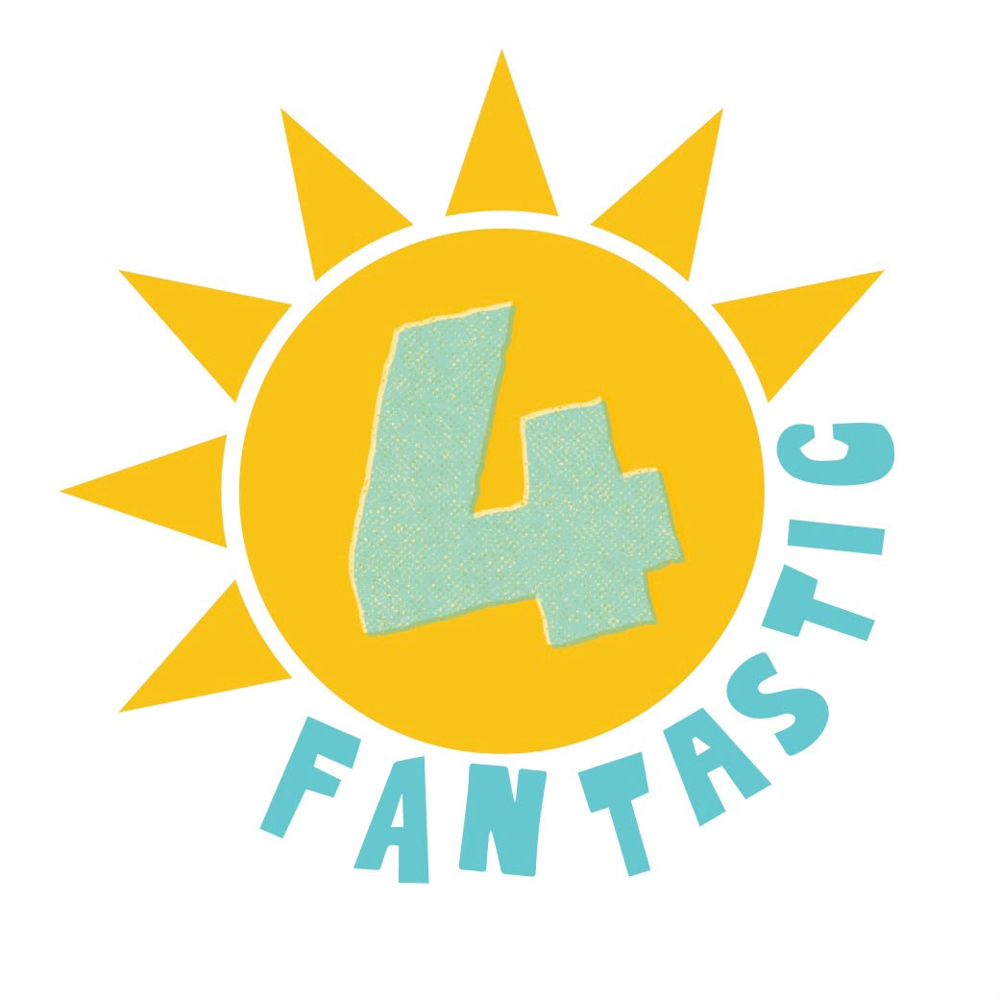

This is Fantastic Four

Matahari (kuning) melambangkan pusat energi, optimisme, dan keceriaan yang memberikan dampak positif ke sekitarnya. Sinar Segitiga mencerminkan fokus, ketajaman visi, dan pertumbuhan yang dinamis ke segala arah. Angka "4" Bertekstur adalah simbol pondasi kelompok yang kuat, unik, kreatif, dan memiliki karakter yang khas. Tulisan Melengkung adalah menunjukkan sifat yang adaptif, ramah, dan fleksibel dalam bekerja sama. Warna Kuning & Biru Muda adalah perpaduan harmoni antara semangat tinggi (kuning) dan pemikiran yang tenang serta ide segar (biru). Inti Kesimpulan: Logo ini melambangkan sebuah tim (angka 4) yang solid, penuh energi kreatif, dan siap menciptakan hasil yang luar biasa (fantastic) dengan cara yang menyenangkan.